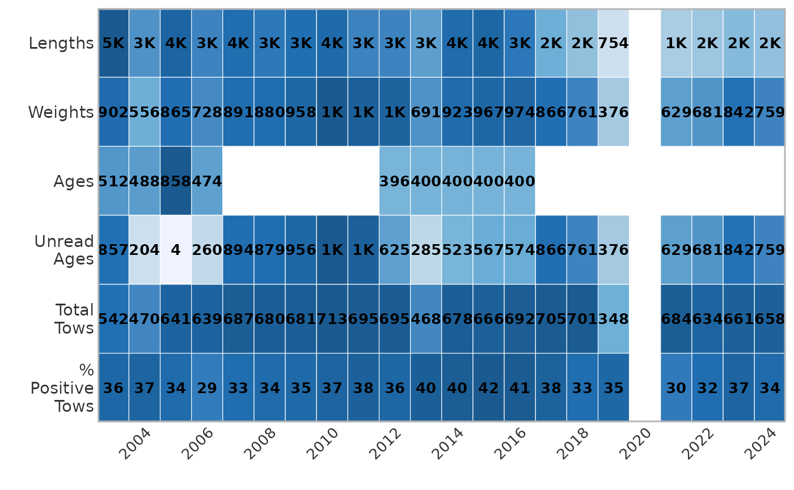

Survey information
a4_survey_table.RmdThe survey_table function creates a tile plot with labels to represent the number and type of samples taken from each region yearly. First, load compatible datasets from the package. It is easiest to join them into one large dataset for the option to see all data:
# Pull biological survey data
data("nwfsc_bio")
data("afsc_bio")
data("pbs_bio")
all_data <- bind_rows(afsc_bio, nwfsc_bio, pbs_bio)The function takes a biological dataset and a species common or scientific name.
head(unique(all_data$common_name))
#> [1] "atka mackerel" "pacific ocean perch" "southern rock sole"
#> [4] "northern rockfish" "flathead sole" "shortraker rockfish"
head(unique(all_data$scientific_name))
#> [1] "pleurogrammus monopterygius" "sebastes alutus"
#> [3] "lepidopsetta bilineata" "sebastes polyspinis"
#> [5] "hippoglossoides elassodon" "sebastes borealis"The optional argument form controls the structure of the
output. The default, form = 2 outputs a ggplot object.
Alternatively, form = 1 outputs a completed tibble of the
same information. There is also a facet_all option.
survey_table(data = nwfsc_bio,
subregions = c("NWFSC"),
species = "arrowtooth flounder",
form = 2)
survey_table(data = nwfsc_bio,
species = "arrowtooth flounder",
form = 1)
#> # A tibble: 22 × 9
#> common survey yr `% Positive Tows` Ages Lengths `Total Tows`
#> <chr> <chr> <int> <dbl> <dbl> <dbl> <dbl>
#> 1 arrowtooth flounder NWFSC 2003 0.356 512 4502 542
#> 2 arrowtooth flounder NWFSC 2004 0.368 488 2748 470
#> 3 arrowtooth flounder NWFSC 2005 0.339 858 3957 641
#> 4 arrowtooth flounder NWFSC 2006 0.294 474 3035 639
#> 5 arrowtooth flounder NWFSC 2007 0.330 0 3552 687
#> 6 arrowtooth flounder NWFSC 2008 0.338 0 3251 680
#> 7 arrowtooth flounder NWFSC 2009 0.345 0 3469 681
#> 8 arrowtooth flounder NWFSC 2010 0.372 0 3695 713
#> 9 arrowtooth flounder NWFSC 2011 0.384 0 3060 695
#> 10 arrowtooth flounder NWFSC 2012 0.357 396 3032 695
#> # ℹ 12 more rows
#> # ℹ 2 more variables: `Unread Ages` <dbl>, Weights <dbl>